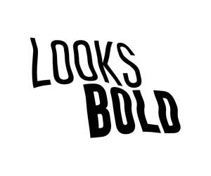

Trade Mark Journal No.2025/024 13 June 2025
UK00004211608 30 May 2025 (16)

- Class 16
- Postcards and picture postcards; Postcard paper; Postcards; Picture postcards; Lenticular postcards; Printed mail response cards; Picture cards; Photographs [printed]; Printed photographs; Photo prints; Printed cardboard invitations; Paper for printing photographs; Printed brochures; Print letters; Printed stationery; Printed recipe cards; Printed paper invitations; Greeting cards; Watercolor pictures; Commemorative postage stamps; Printed cards; Letterhead paper; Printed invitations; Envelopes [stationery]; Paintings [pictures], framed or unframed; Printed flyers; Printed booklets; Souvenir banknotes; Bottle envelopes of paper or cardboard; Bottle envelopes of cardboard or paper; Musical greeting cards; Invitation cards; Paper boxes for storing greeting cards; Photograph album pages; Photograph albums; Envelope paper; Pop-up greetings cards; Letter paper; Printed informational cards; Cardboard picture mounts; Paper picture mounts; Printed leaflets; Greetings cards; Pictorial prints; Photographic printing paper; Correspondence cards; Photocopy paper; Printed art reproductions; Printed advertising boards of cardboard; Book-cover paper; Printed pamphlets; Advertisement boards of paper or cardboard; Printed advertising boards of paper; Signed photographs; Announcement cards [stationery]; Poster magazines; Advertisement boards of card; Photographs; Printed paper signs; Paper envelopes for packaging; Picture books; Postage stamps; Stamps (Postage -); Printed questionnaires; Printed informational flyers; Musical greetings cards; Photograph corners; Commemorative stamp sheets; Cartoon prints; Paper mail pouches; Paper stationery; Stickers [stationery]; Signboards of paper or cardboard; Advertising signs of paper or cardboard; Printed paper labels; Paper folders [stationery]; Printed calendars; Photo albums; Envelope papers; Notelets; Printed stories in illustrated form; Photographic prints; Printed newsletters; Printed advertisements; Radiograms (Paper for -); Paper for radiograms; Poster books; Offset printing paper for pamphlets; Transparencies [stationery]; Office paper stationery; Facsimile transmission paper; Photocopy papers; Prints in the nature of pictures; Paper gift tags; Advertisement boards of cardboard; Envelopes; Placards of paper or cardboard; Mini photo albums; School photographs; Dye-sublimation print paper; Photograph mounts; Post cards; Gift paper; Paper letters and numbers.
Ebru Tamer Ugur